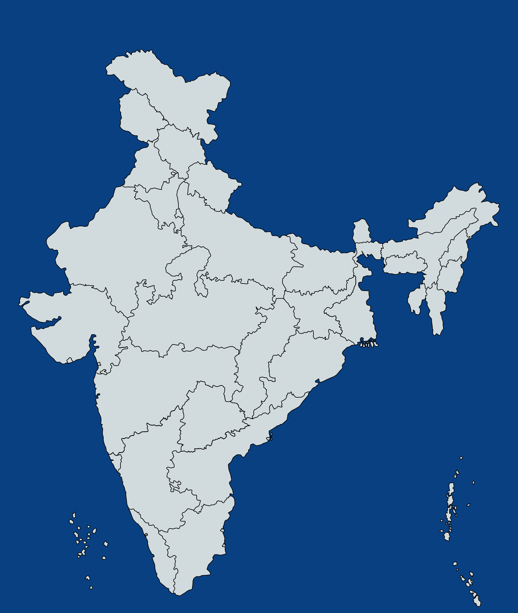

← Back to Arena
🗺️ All Maps
📜 History (Ch 2)
🌍 Geography
All Geography
Ch 3: Dams
Ch 5: Minerals & Energy
Ch 6: Industries
Ch 7: Ports & Airports

CBSE Class 10 Map Practice
Question 1 of 1
Loading practice question...
← Prev
🔄 Restart
Next →